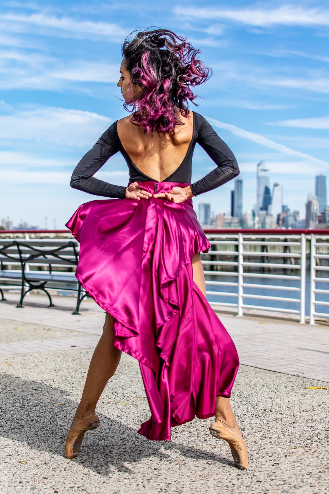
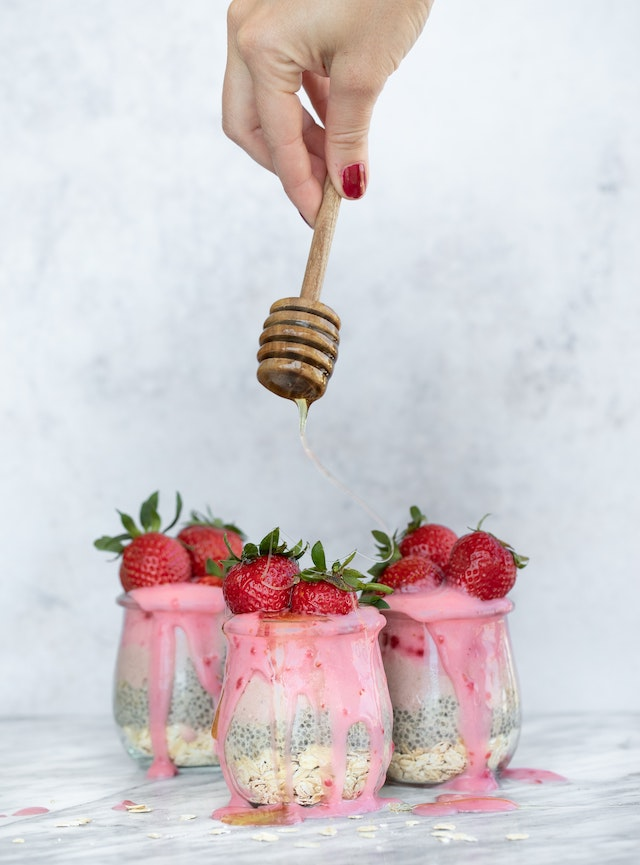

Other Interests

Dance
I am a former professional dancer. Ballet, body conditioning and
other types of dance were part of my daily life. This type of
art contributed to developing a deep sense of commitment to
focusing and learning quickly. Dancing gave me the opportunity
to travel, have cultural experiences and work in many different
settings. In the past few years I joined the Lindy Hop community
here in NYC which has been a delightful source of happiness,
friendships and lots of dancing.

Travel & Culture
I've always had the desire to see more of the world and I
luckily share that passion with my husband. We dream of seeing
it all and we are always excited to plan the next trip. Seeing
the natural world and experiencing other cultures is life
enriching, it makes me feel open, creative and more appreciative
of what I already have.

Environment
I have deep respect for the power and beauty of the natural
world. I'm excited about scientific and technological
innovations that offer a path to harmonious coexistence between
humans and nature.

Arts & Crafts
Handmade items are special to me, I truly admire the thought and
skill put into their creation. I find that most of the time they
teach us something about somebody, about culture or about
ourselves. I like to challenge myself by learning new things, I
taught myself how to sew, crochet, embroider and do macrame and
love to spend some of my free time doing DIY projects.

Healthy Food
Learning about global problems like climate change and health
made me question a lot of my personal choices, it shifted my
perspective and made me realise that I can take ownership of my
health and my impact on the planet. Having that power led me to
make healthier food choices and think more about how to live in
ease rather than disease.

Mindfulness
I've been practicing yoga for about 9 years and this is how I
first learned about "being mindful". The practice on the yoga
mat taught me empathy, acceptance, resilience and then I
extended this knowledge to other areas of my life. This has been
a valuable contribution to my ongoing personal development and
provides a framework to nurture meaningful relationships in my
life.